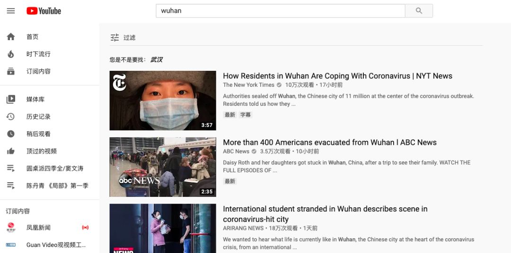

「 隔离日记 」 20200204
原文链接 备份链接 播放音乐 | 阅读效果更佳 感谢 | 您对霍超LEGAL的关注、阅读与分享 _特别感谢小吴同学，日记有了衍生周边2333 _ 十分感人的是，在写日记的第五天，收到了小吴同学的漫画祝福，显得自己好像是在有猫、有狗、有光、 …
播放音乐 | 阅读效果更佳
感谢 | 您对霍超LEGAL的关注、阅读与分享
每天在小房间里最经常的就是看看各种视频网站，获取一些信息，更是缓解一些无聊，不过在潜移默化中，让我细思极恐的是的越来越精确的大数据算法，推送的内容显得那么贴心、那么合理，完全不会让你因噎废食，而是一股脑的继续下去，以至于让我自己感觉虽然看似有了WiFi，有了互联网，连接着外边的世界，但兜兜转转其实还是被困在一个信息的茧房里，被网络的另一端不断地投食着自己想要的信息。

隔离区窗外，来送盒饭的人，2020年2月5日

隔离区里每日变化不大的三餐，2020年2月5日
如果说疫情总会过去，我们所担心的更多是究竟要等多少个14天，才能够走出家们，自由的呼吸空气。那么对于网络背后所被编织的越来越美丽、实则越来越封闭的信息茧房，我觉得那才是一个更黑暗的深渊。

在不断迭代、不断演进的算法面前，自己更显得微不足道，想到病毒我们可以带上口罩、躲进房间里，而面对互联网，点击带来的即刻满足，不仅难已拒绝，更可怕的是所能满足的仍在被无限延伸，从线上到线下，从商品到服务….
在洗澡的时候总习惯着手机或在旁边放着个视频，听听声音，自己也顾不得中间节目的跳转，系统自动跳到另一个视频里，而这一切都是另外一个人可能在28个小时前坐在千里之外的电脑前，一个有着与我高度相似的人浏览网页的顺序，甚至有点不寒而栗。

北京王府井Applestore门前的跳广场舞的人们，2019年12月7日
不论你是否愿意接受或者承认，信息时代越来越高度的数字化，所带来的就是自私有制伴随而生个人隐私的丧失，无论中外，只是数据到底最终归属于大型的跨国公司还是政府组织，但这隐私的丧失都是难以避免的宿命。比如像我刚刚到机场被海关扣住的时候，就很主动地交代自己所有的行动轨迹，因为明白这一切也都有所痕迹，唯一可能的问题无非在于，所有的信息是否都已汇总到一个系统里，而此时此刻能够保护自己和他人的最好方式就是去坦白从宽，避免疏漏。
用手机联网查证核实轨迹信息，2020年1月30日
我想着也是这些年越来越多的人喜欢上胶片相机、喜欢上拍立得的原因，除了时尚风潮的影响外，确实非虚拟的、非数字的，能够拿在手上实体的胶片、相纸，会有一种特殊的真切感和踏实感，能够愿意让一些人花更多的钱、更多的时间去消耗与感知，虽然我们往往又会把它扫描数码化，以便在社交软件上分享，获得更多地点赞、更多地分享，但是在手里的那种感觉确实还不太一样，即便这种满足也很短暂，但弥足珍贵。

海边，2020年1月29日
然而最后还是要感谢，因为有了网络、有了WiFi、有了微信，没有让一个个隔离区里小房间的人，成为一座座与世隔绝的孤岛，还能活在信息时代，收到祝福、收到问候、收到外卖….
查看 往日
—End—
文 | 霍超
插曲 | 《Radio in My Head》- 朴树
封面插图 | 霍超
正文摄影 | 霍超
封底视频 | Every Leica has a Soul
长按二维码
关注 | 公众号

点 在看 留下你的印记
谢谢一路有你＼( ^▽^ )／
Huochao
谢谢支持！
长按二维码向我转账
谢谢支持！
受苹果公司新规定影响，微信 iOS 版的赞赏功能被关闭，可通过二维码转账支持公众号。
原文链接 备份链接 播放音乐 | 阅读效果更佳 感谢 | 您对霍超LEGAL的关注、阅读与分享 _特别感谢小吴同学，日记有了衍生周边2333 _ 十分感人的是，在写日记的第五天，收到了小吴同学的漫画祝福，显得自己好像是在有猫、有狗、有光、 …
原文链接 备份链接 播放音乐 | 阅读效果更佳 感谢 | 您对霍超LEGAL的关注、阅读与分享 依据国务院2020年春节放假延长的通知，今天本应该是正式开始工作的日子，然而由于疫情的原因，全国多地的企业受地方政府的明确要求，只能继续暂停运 …
原文链接 备份链接 播放音乐 | 阅读效果更佳 感谢 | 您对霍超LEGAL的关注、阅读与分享 如今我每天蜗居在隔离房间里，都会定时看一些疫情相关的新闻，笑着看的时候看看看着就哭了；哭着看的时候，看着看着就笑 …
原文链接 备份链接 播放音乐 | 阅读效果更佳 感谢 | 您对霍超LEGAL的关注、阅读与分享 昨天，许多关心和关注我的人看到推送，给予我鼓励和安慰，收到祝福的消息太多，以至于一时让我有些手足无措，没能及时回复还望谅解，在此必须再说一句感 …
原文链接 备份链接 播放音乐 | 阅读效果更佳 感谢 | 您对霍超LEGAL的关注、阅读与分享 昨天飞机刚刚落地，手机开机给爸妈报了平安，人们开始涌动，起来从行李架上收拾东西，飞机上的广播突然响起，”乘坐本次航班的旅客 霍超先生，因为您先 …